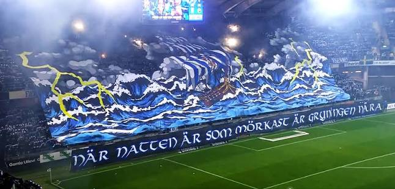
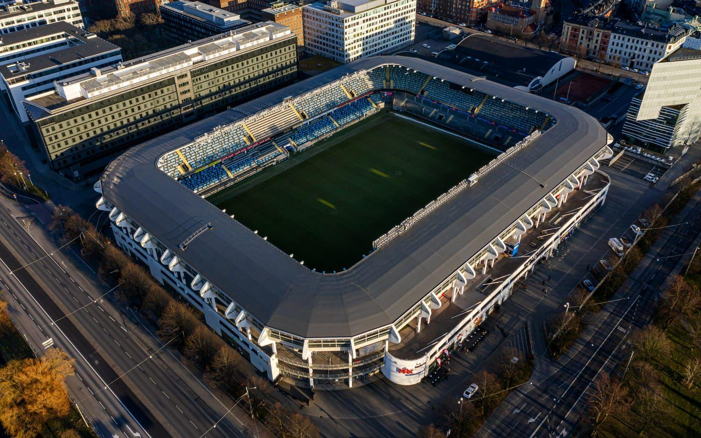
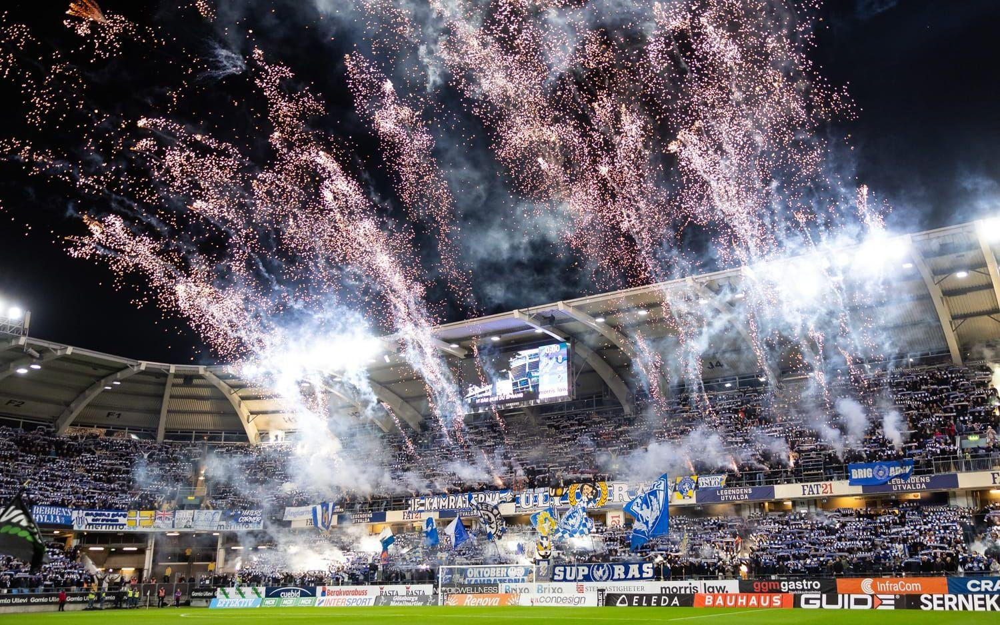

IFK Göteborg
Om laget
IFK Göteborg, kallade Blåvitt, spelar i Allsvenskan och har sin hemmaarena på Gamla Ullevi i Göteborg. Lagets färger är blått och vitt, och spelarna går alltid in på planen i de klassiska blåvita ränderna.
Klubben har en av Sveriges största supporterskaror, och det är alltid fullsatt och högljutt på läktarna. Särskilt i matcherna mot GAIS och AIK, deras största rivaler, blir det högljutt.
IFK Göteborg är också känd för sin ungdomsverksamhet, där många unga spelare får chansen att utvecklas och på sikt ta steget upp i A-laget.


